In this lesson, you’ll continue to work on the UI for the meal scene in the FoodTracker app. You’ll rearrange the existing UI elements and work with an image picker to add a photo to the UI. When you’re finished, your app will look something like this:
このレッスンでは、あなたは引き続きFoodTrackerアプリの食事シーンのためのUIに取り組みます。あなたは、既存のUI要素を再配置します、そして写真をUIに加えるためにイメージピッカー（画像を選び出す機能）を扱います。あなたが作業し終わった時、あなたのアプリはこのようなものに見えるでしょう：
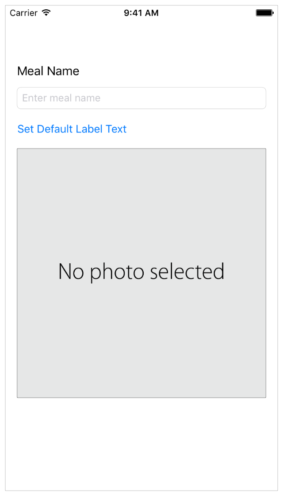
Learning Objectives
学習する目標
At the end of the lesson, you’ll be able to:
このレッスンの終わりに、あなたが出来るようになるのは：
Understand the view controller life cycle and when its callbacks occur, such as viewDidLoad, viewWillAppear and viewDidAppear
ビューコントローラのライフサイクルと何時それのコールバック、例えばviewDidLoad、viewWillAppear、そしてviewDidAppearなどが発生するかを理解する
Pass data between view controllers
データをビューコントローラ間で渡す
Dismiss a view controller
ビューコントローラをかたづける
Use gesture recognizers as an additional level of generating events
ジェスチャリコグナイザ（身振り認識）を追加的位置づけイベント生成として使う
Anticipate object behavior based on the UIView/UIControl class hierarchy
オブジェクト挙動をUIView/UIControlクラス階層に基づいて先取りする
Use the asset catalog to add image assets to a project
アセットカタログ（資産目録）を使用して画像資産をプロジェクトに加える
Understand the View Controller Lifecycle
ビューコントローラのライフサイクルを理解する
So far, the FoodTracker app has a single scene, whose UI is managed by a single view controller. As you build more complex apps, you’ll be dealing with more scenes, and will need to manage loading and unloading views as they’re moved on and off the screen.
これまで、FoodTrackerアプリはただ１つのシーンしか持たず、それはUIがただ１つのビューコントローラによって管理されます。あなたがより複雑なアプリを作るにつれて、あなたはもっとシーンを取り扱っているでしょう、そしてビューのロードとアンロードをそれらが画面に現れたり隠れたりするときに管理する必要があるでしょう。
An object of the UIViewController class (and its subclasses) comes with a set of methods that manage its view hierarchy. iOS automatically calls these methods at appropriate times when a view controller transitions between states. When you create a view controller subclass (like the ViewController class you’ve been working with), it inherits the methods defined in UIViewController and lets you add your own custom behavior for each method. It’s important to understand when these methods get called, so you can set up or tear down the views you’re displaying at the appropriate step in the process—something you’ll need to do later in the lessons.
UIViewControllerクラス（およびそれのサブクラス）のあるオブジェクトは、ひと揃いのメソッドを備えていて、それらはそれのビュー階層を管理します。iOSは、自動的にそれらのメソッドを適切な時に呼びます、その時とはあるビューコントローラが２つの状態間を推移するときです。あなたがあるビューコントローラのサブクラス（あなたが扱っていたことのあるViewControllerクラスのようなもの）を作成する時には、それは、UIViewControllerで定義されるメソッドを継承し、そしてあなたにあなた独自のあつらえの挙動をそれぞれのメソッドに加えさせます。重要なことは、それらのメソッドがいつ呼び出されるか理解することです、そうすればあなたはあなたが表示しているビューの準備や解体がこの一連の過程の適切な段階でできます—それはあなたが後にこのレッスンでする必要があることです。
UIViewController methods get called as follows:
呼び出されるUIViewControllerメソッドは次になります：
viewDidLoad()—Called when the view controller’s content view (the top of its view hierarchy) is created and loaded from a storyboard. This method is intended for initial setup. However, because views may be purged due to limited resources in an app, there is no guarantee that it will be called only once.
viewDidLoad()—ビューコントローラのコンテンツビューが作成されてロードされるときにストーリーボードから呼ばれます。このメソッドは、初期設定用に提供されます。しかしながら、ビューはアプリの限られたリソースのために解放されるかもしれないので、それが一度だけ呼ばれるとは保障されません。
viewWillAppear()—Intended for any operations that you want always to occur before the view becomes visible. Because a view’s visibility may be toggled or obscured by other views, this method is always called immediately before the content view appears onscreen.
viewWillAppear()—ビューが見えるようになる前に発生することを常にあなたが望むあらゆる操作のために提供されます。あるビューの可視性が他のビューによって切り替えられたり（オンオフ）弱められたりする（ぼやかし）かもしれないことから、このメソッドは常にコンテンツビューが画面上に現れる直前に呼ばれます。
viewDidAppear()—Intended for any operations that you want to occur as soon as the view becomes visible, such as fetching data or showing an animation. Because a view’s visibility may be toggled or obscured by other views, this method is always called immediately after the content view appears onscreen.
viewDidAppear()—ビューが見えるようになるとすぐに発生することをあなたが望むあらゆる操作のために提供されます、たとえばデータを取ってくる、またはアニメーションを見せるなど。あるビューの可視性が他のビューによって切り替えられたり（オンオフ）弱められたりする（ぼやかし）かもしれないことからこのメソッドは常にコンテンツビューが画面上に現れた直後に呼ばれます。
A complementary set of teardown methods exists, as shown in the state transition diagram above.
補完的なひと揃いの解体メソッドが、上の状態推移図で見せたように存在します。
You’ll be using some of these methods in the FoodTracker app to load and display view data at the right time. In fact, if you recall, you’ve already written some code in the viewDidLoad() method of ViewController:
あなたは、これらのメソッドのいくつかをFoodTrackerアプリにおいてビューデータをロードしたり表示したりするために使うことになっています。実際、あなたが思い出すならば、あなたはすでにいくつかのコードをViewControllerのviewDidLoad()メソッドにおいて書いています：
overridefuncviewDidLoad() {
super.viewDidLoad()
// Handle the text field’s user input through delegate callbacks. （テキスト欄のユーザ入力を委任先コールバックを経由して取り扱います。）
nameTextField.delegate = self
}
This style of app design where view controllers serve as the communication pipeline between your views and data model is known as MVC (Model-View-Controller). In this pattern, models keep track of your app’s data, views display your user interface and make up the content of an app, and controllers manage your views. By responding to user actions and populating views with content from the data model, controllers serve as a gateway for communication between the model and views. MVC is central to a good design for any iOS app, and so far, the FoodTracker app has been built along MVC principles.
ビューコントローラがあなたのビューとデータモデルの間で通信の輸送菅としての役目をするこの形式のアプリ設計は、MVC（モデル-ビュー-コントローラ）として知られます。このパターン（類型）において、モデルはあなたのアプリのデータの最新状態を把握し、ビューはあなたのユーザインターフェイスを表示してアプリのコンテンツを作り上げ、そしてコントローラはあなたのビューを管理します。ユーザアクションへ応答することとビューをデータモデルからのコンテンツで満たすことによって、コントローラはモデルとビューの間の通信の関門の役目をします。MVCは、iOSアプリのための良い設計として中心的なものです。
As you keep the MVC pattern in mind for rest of the app’s design, it’s time to take your basic UI to the next level, and create a final layout for the meal scene.
あなたがこのアプリの設計の残りに向けてMVCパターンを心に留めておくなら、あなたの基本UIを次のレベルに持っていき、食事シーンのための最終的なレイアウトを作成するときです。
Add a Meal Photo
食事の写真を加える
The next step in finishing the meal scene UI is adding a way to display a photo of a particular meal. For this, you’ll use an image view (UIImageView), a UI element that displays a picture.
食事シーンUIを仕上げる次の段階は、ある食事の写真を表示する方法を加えることです。このために、あなたはイメージビュー（UIImageView）、図を表示するUI要素を使うことになります。
To add an image view to your scene
イメージビューをあなたのシーンに加えるには
Open your storyboard, Main.storyboard.
あなたのストーリーボード、Main.storyboardを開いてください。
Open the Object library in the utility area. (Alternatively, choose View > Utilities > Show Object Library.)
オブジェクトライブラリをユーティリティ区画で開きます。（または代わりに、View > Utilities > Show Object Libraryを選びます）
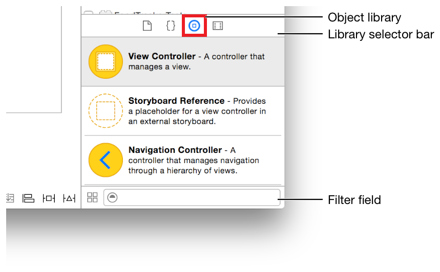
In the Object library, type image view in the filter field to find the Image View object quickly.
オブジェクトライブラリにおいて、image viewをフィルタ欄にタイプしてImage View（イメージビュー）オブジェクトを素早く見つけます。
Drag an Image View object from the Object library to your scene so that it’s in the stack view below the button.
Image Viewオブジェクトをオブジェクトライブラリからあなたのシーンへドラッグして、それがスタックビューの中のボタンの下になるようにします。
With the image view selected, open the Size inspector in the utility area.
イメージビューが選択された状態で、Size（サイズ）インスペクタをユーティリティ区画で開きます。
Recall that the Size inspector appears when you select the fifth button from the left in the inspector selector bar. It lets you edit the size and position of an object in your storyboard.
思い出してください、このサイズインスペクタが現れるのはあなたが左から5番目のボタンをインスペクタ選択バーで選んだ時です。それは、あなたにあなたのストーリーボードの中のオブジェクトの大きさと位置を編集させます。
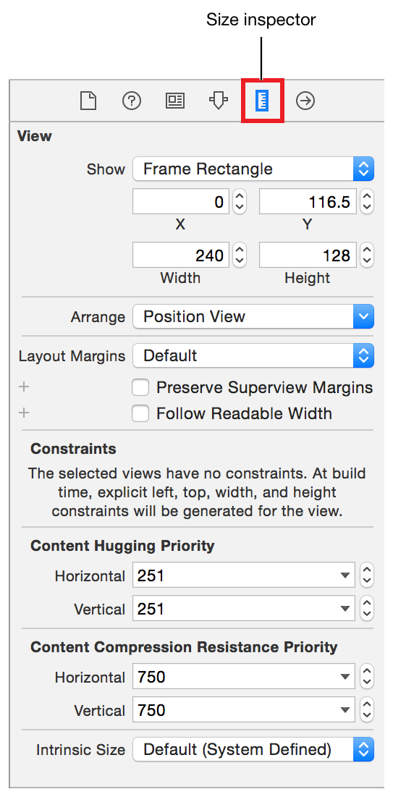
In the Intrinsic Size field, select Placeholder. (This field is at the bottom of the Size inspector, so you’ll need to scroll down to it.)
Intrinsic Size（固有サイズ）欄において、Placeholder（プレースホルダ）を選びます。（この欄は、Sizeインスペクタの下の方にあります、それであなたはそれまで下にスクロールする必要があるでしょう）
Type 320 in both the Width and Height fields. Press Return.
320をWidth（幅）とHeight（高さ）欄にタイプします。リターンキーを押します。
An empty image view doesn’t have an intrinsic content size. You’re giving your image view a placeholder size so you can specify the appropriate constraints in your interface.
空のイメージビューは固有コンテンツサイズを持ちません。あなたは、あなたのイメージビューにプレースホルダサイズを与えています、それであなたは適切な制約をあなたのインターフェイスにおいて指定できます。
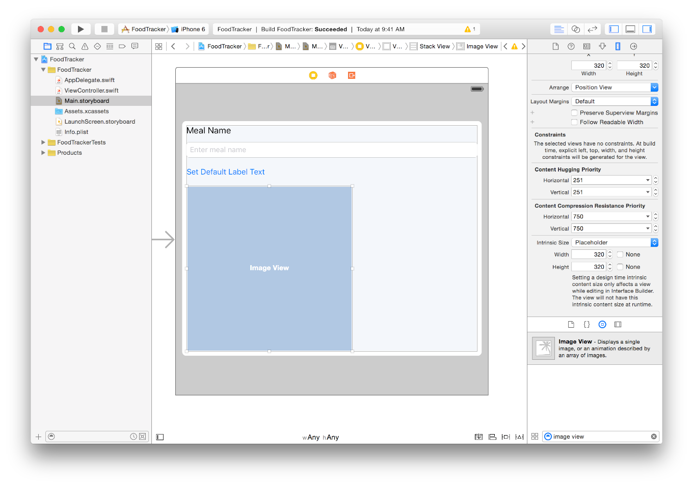
On the bottom right of the canvas, open the Pin menu.
キャンバスの１番下右で、Pin（固定）メニューを開いてください。
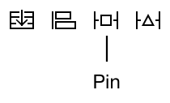
Select the checkbox next to Aspect Ratio.
Aspect Ratio（アスペクト比、縦横比率）の隣のチェックボックスを選択してください。
The Pin menu should look something like this:
Pinメニューはこのようなものに見えるはずです：
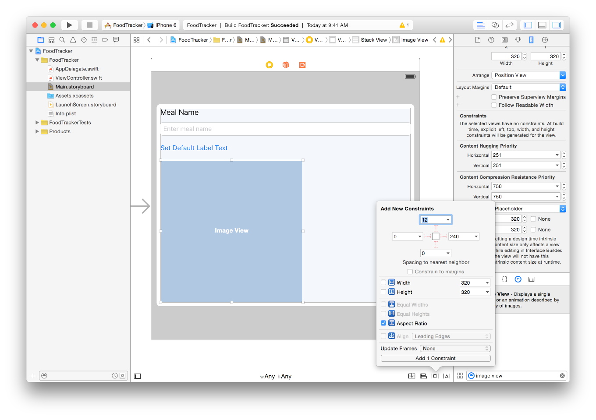
In the Pin menu, click the Add 1 Constraints button.
Pinメニューにおいて、Add 1 Constraints（１つの制約を追加）ボタンをクリックしてください。
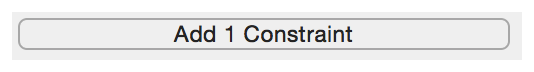
Your image view now has a 1:1 aspect ratio, so it will always show a square.
あなたのイメージビューは今では1:1の縦横比率を持ちます、それでそれは常に正方形に表示されます。
With the image view selected, open the Attributes inspector.
イメージビューが選択された状態で、Attributes（属性）インスペクタを開きます。
Recall that the Attributes inspector appears when you select the fourth button from the left in the inspector selector bar. It lets you edit the properties of an object in your storyboard.
思い出してください、Attributesインスペクタが現れるのはあなたが左から４番目のボタンをインスペクタ選択バーで選択した時です。それはあなたにあなたのストーリーボードのオブジェクトのプロパティを編集させます。
In the Attributes inspector, find the field labeled Interaction and select the User Interaction Enabled checkbox.
Attributesインスペクタにおいて、Interaction（相互作用）とラベルをつけられる欄を探して、User Interaction Enabled（ユーザ相互作用を可能にする）チェックボックスを選択してください。
You’ll need this feature later to let users interact with the image view.
あなたは、ユーザがイメージビューと相互作用できるようにするためにこの機能を後で必要とします。
Your UI should look like this:
あなたのUIはこのように見えるはずです：
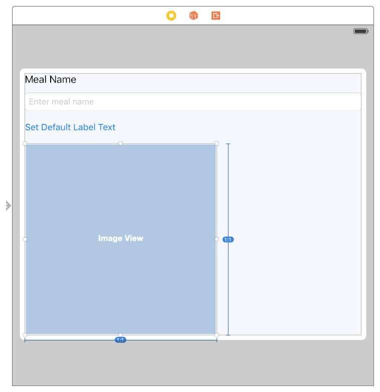
Display a Default Photo
初期写真を表示する
Users need an indication that they can interact with the image view to select a photo. To accomplish this, add a default placeholder image that communicates to users that they can choose a photo.
ユーザはある相互作用を必要とします、それは、彼らがイメージビューと相互作用して写真を選択することができることです。これを成し遂げるために、初期プレースホルダ画像を加えます、それはユーザに彼らが写真を選ぶことができるのを伝えます。
You can find the image shown above within the Images/ folder of the downloadable file at the end of this lesson, or use your own image.
あなたは、上で示される画像をこのレッスンの終わりでダウンロード可能なファイルのImages/フォルダ内で見つけることができます、またはあなた独自の画像を使ってください。
To add an image to your project
画像をあなたのプロジェクトに加えるには
In the project navigator, select Assets.xcassets to view the asset catalog.
プロジェクトナビゲータにおいて、Assets.xcassetsを選択してアセットカタログ（資産目録）を眺めてください。
The asset catalog is a place to store and organize your image assets for an app.
アセットカタログは、アプリのためのあなたの画像資産を保管して整理するところです。
In the bottom left corner, click the plus (+) button and select New Image Set from the pop-up menu.
１番下左の隅で、プラス（+）ボタンをクリックしてNew Image Set（新規画像セット）をポップアップメニューから選んでください。
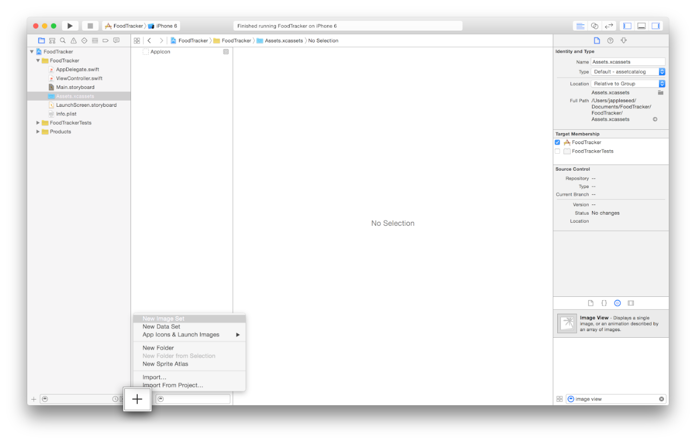
Double-click the image set name and rename it to defaultPhoto.
画像セット名をダブルクリックして、それをdefaultPhotoに名前変更してください。
On your computer, select the image you want to add.
あなたのコンピュータ上で、あなたが加えたい画像を選択してください。
Drag and drop the image into the 2x slot in the image set.
その画像を画像セットの2xの挿入位置にドラック＆ドロップしてください。
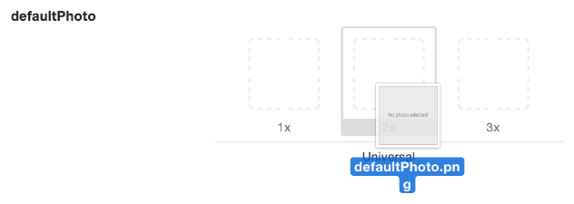
2x is the display resolution for the iPhone 6 Simulator that you’re using in these lessons, so the image will look best at this resolution.
2xは、iPhone 6シミュレータ用の画面解像度で、あなたがこのレッスンで使っているものです、それでこの解像度でその画像は最もよく見えるでしょう。
With the default placeholder image added to your project, set the image view to display it.
あなたのプロジェクトに加えた初期プレースホルダ画像をつかって、イメージビューがそれを表示するように設定します。
To display a default image in the image view
初期画像をイメージビューで表示するには
Open your storyboard.
あなたのストーリーボードを開いてください。
In your storyboard, select the image view.
あなたのストーリーボードにおいて、イメージビューを選択してください。
With the image view selected, open the Attributes inspector in the utility area.
そのイメージビューが選択された状態で、Attributesインスペクタをユーティリティ区画で開いてください。
In the Attributes inspector, find the field labeled Image and select defaultPhoto.
Attributesインスペクタにおいて、Imageとラベルをつけられる欄を探してdefaultPhotoを選択します。
Checkpoint: Run your app. The default image displays in the image view.
確認点：あなたのアプリを実行します。初期画像がイメージビューに表示されます。
Connect the Image View to Code
イメージビューをコードに接続する
Now, you need to implement the functionality necessary to change the image in this image view at runtime. You’ll want to be able to change the image from within the code. For this, you first need to connect the image view to the code in ViewController.swift.
現在、あなたが必要とするのは機能性の実装で、実行時にイメージビュー内の画像を変更するのに不可欠です。あなたは、画像をコード内から変更できることを望むでしょう。このため、あなたがまず必要とするのは画像ビューをViewController.swift内のコードに接続することです。
To connect the image view to the ViewController.swift code
イメージビューをViewController.swiftコードに接続するには
Click the Assistant button in the Xcode toolbar near the top right corner of Xcode to open the assistant editor.
XcodeツールバーのAssistantボタンをXcodeの１番上右隅近くでクリックして、アシスタントエディタを開いてください。
If you want more space to work, collapse the project navigator and utility area by clicking the Navigator and Utilities buttons in the Xcode toolbar.
あなたがもっと場所を必要とするならば、プロジェクトナビゲータとユーティリティ区画をNavigatorとUtilitiesボタンをXcodeツールバーにおいてクリックすることで折り畳んでください。
You can also collapse the outline view.
あなたはまたアウトラインビューも折り畳むことができます。
In your storyboard, select the image view.
あなたのストーリーボードにおいて、イメージビューを選択してください。
Control-drag from the image view on your canvas to the code display in the editor on the right, stopping the drag at the line just below the existing outlets in ViewController.swift.
あなたのキャンバス上のイメージビューから右のエディタの中のコード表示へコントロール-ドラッグして、ViewController.swiftの中の既存のアウトレットのすぐ下の行でドラッグをやめてください。
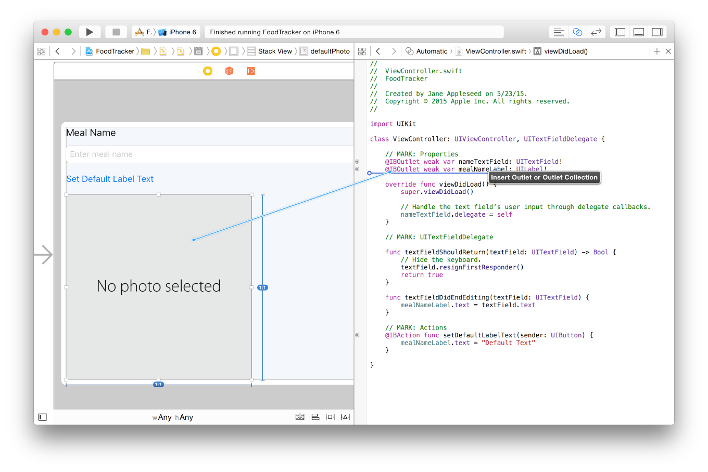
In the dialog that appears, for Name, type photoImageView.
現れたダイアログにおいて、名前に、photoImageViewをタイプしてください。
Leave the rest of the options as they are. Your dialog should look like this:
残りのオプションはそれらのままにしておきます。あなたのダイアログはこのように見えるはずです：
Click Connect.
Connectをクリックしてください。
Xcode adds the necessary code to ViewController.swift to store a pointer to the image view and configures the storyboard to set up that connection.
Xcodeは、不可欠なコードをViewController.swiftに加えることでイメージビューへのポインタを保管します、そしてストーリーボードを修正することでこの接続を確立します。
@IBOutletweakvarphotoImageView: UIImageView!
You can now access the image view from code to change its image, but how do you know when to change the image? You need to give users a way to indicate that they want to change the image—for example, by tapping the image view. Then, you’ll define an action method to change the image when a tap occurs.
あなたは今やイメージビューにコードからアクセスしてそれの画像を変更できます、しかしあなたは画像を変更する時をどうやって知るのでしょう？あなたが必要なのは、ユーザにある方法を与えて、彼らが画像を変更したいことを示させることです—たとえば、イメージビューをタップすることによって。そうすれば、あなたはアクションメソッドを定義することで、タップが起こったとき画像を変更します。
There’s a nuanced distinction between views and controls, which are specialized versions of views that respond to user actions in a specific way. A view displays content, whereas a control is used to modify it in some way. A control (UIControl) is a subclass of UIView. In fact, you’ve already worked with both views (labels, image views) and controls (text fields, buttons) in your interface.
ある微妙な相違がビューと、ビューの特殊化版でユーザアクションに特定の方法で応答するコントロールの間にはあります。ビューはコンテンツを表示します、それに対してコントロールはそれをある方法で修正するために使われます。コントロール（UIControl）は、UIViewのサブクラスです。実際、あなたはすでにビュー（ラベル、イメージビュー）とコントロール（テキスト欄、ボタン）の両方をあなたのインターフェイスで扱っています。
Create a Gesture Recognizer
ジェスチャリコグナイザの作成
An image view isn’t a control, so it’s not designed to respond to input in the same way that a control—such as a button—responds. For example, you can’t simply create an action method that’s triggered when a user taps on an image view. (If you try to Control-drag from the image view to your code, you’ll notice that you can’t select Action in the Connection field.)
イメージビューは、コントロールではありません、それでそれは—ボタンのような—コントロールが応答するのと同じ方法で入力に応答するように設計されません。たとえば、あなたはユーザがイメージビューをタップするとき切り替えられるアクションメソッドを簡単には作成できません。（あなたがイメージビューからあなたのコードにコントロールドラッグすることを試みるならば、あなたはConnection欄のActionを選択できないことに気づくでしょう。）
Fortunately, it’s quite easy to give a view the same capabilities as a control by adding a gesture recognizer to it. Gesture recognizers are objects that you attach to a view that allow the view to respond to actions the way a control does. Gesture recognizers interpret touches to determine whether they correspond to a specific gesture, such as a swipe, pinch, or rotation. You can write an action method that occurs when a gesture recognizer recognizes its assigned gesture, which is exactly what you need to do for the image view.
幸いなことに、ビューにコントロールと同じ能力を与えるのは、ジェスチャリコグナイザをそれに加えることによって比較的簡単です。ジェスチャリコグナイザはオブジェクトです、それは、あなたがビューに取り付けてそのビューがコントロールが行うやり方でアクションに応答できるようにするものです。ジェスチャリコグナイザは、タッチを解釈して、それが特定のジェスチャ、例えばスワイプ、ビンチ、または回転などに相当するか判断します。あなたは、あるジェスチャリコグナイザがそれの割当てジェスチャを認識するときに発生するアクションメソッドを書くことができます、それは、まさしくあなたがイメージビューにする必要があるものです。
Attach a tap gesture recognizer (UITapGestureRecognizer) to the image view, which will recognize when a user has tapped the image view. You can do this easily in your storyboard.
タップジェスチャリコグナイザ（UITapGestureRecognizer）をイメージビューに取り付けます、それは、ユーザがイメージビューをタップしたときを認識します。あなたはこれを簡単にあなたのストーリーボードに行うことができます。
To add a tap gesture recognizer to your image view
タップジェスチャリコグナイザをあなたのイメージビューに加えるには
Open the Object library. (To open it quickly, choose View > Utilities > Show Object Library.)
オブジェクトライブラリを開きます。（すばやくそれを開くには、View > Utilities > Show Object Libraryを選びます）
In the Object library, type tap gesture in the filter field to find the Tap Gesture Recognizer object quickly.
オブジェクトライブラリにおいて、フィルタ欄にtap gestureをタイプしてTap Gesture Recognizerオブジェクトをすばやく見つけます。
Drag a Tap Gesture Recognizer object from the Object library to your scene, and place it on top of the image view.
Tap Gesture Recognizerオブジェクトをオブジェクトライブラリからあなたのシーンにドラッグします、そしてそれをイメージビューの上に配置します。
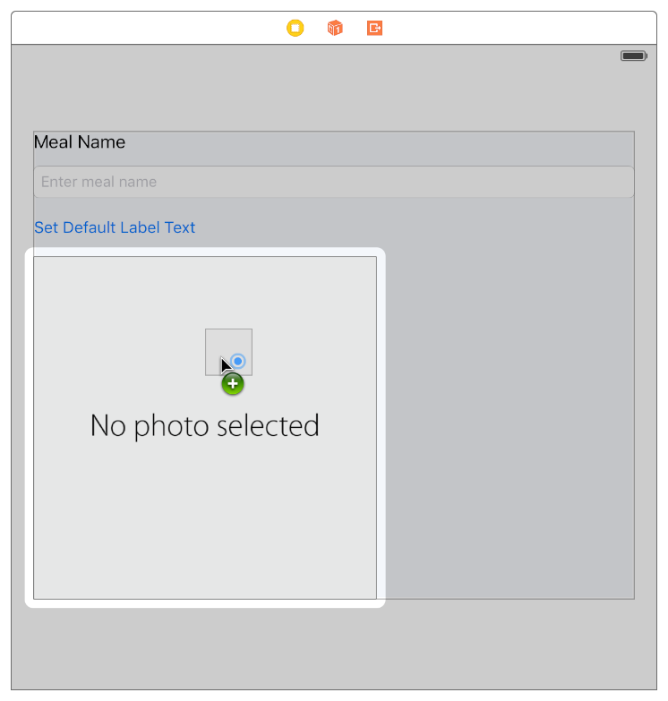
The Tap Gesture Recognizer appears in the meal scene dock.
Tap Gesture Recognizerが食事シーンドックに現れます。
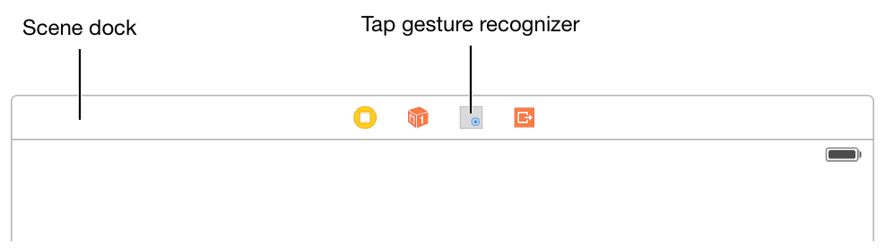
Connect the Gesture Recognizer to Code
ジェスチャリコグナイザをコードに接続する
Now, connect that gesture recognizer to an action method in your code.
今度は、このジェスチャリコグナイザをあなたのコードのアクションメソッドに接続します。
To connect the gesture recognizer to the ViewController.swift code
ジェスチャリコグナイザをViewController.swiftコードに接続するには
Control-drag from the gesture recognizer in the scene dock to the code display in the editor on the right, stopping the drag at the line below the // MARK: Actionscomment in ViewController.swift.
シーンドックのジェスチャリコグナイザから右のエディタのコード表示へコントロール-ドラッグして、ViewController.swiftの中の// MARK: Actionsコメントの下の行でドラッグをやめます。
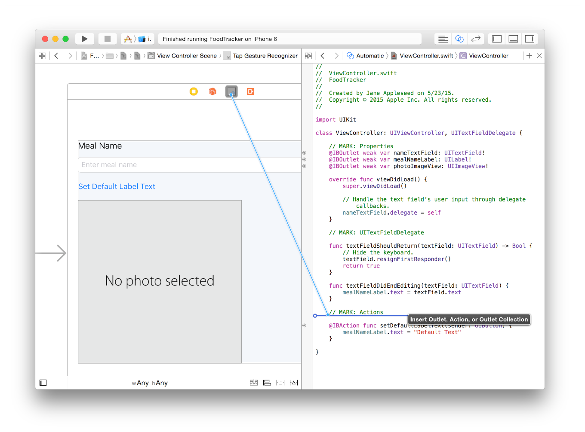
In the dialog that appears, for Connection, select Action.
現れたダイアログで、Connectionに対して、Actionを選択します。
For Name, type selectImageFromPhotoLibrary.
Nameに対して、selectImageFromPhotoLibraryをタイプします。
For Type, select UITapGestureRecognizer.
Typeに対して、UITapGestureRecognizerを選択します。
Your dialog should look like this:
あなたのダイアログはこのように見えるはずです：
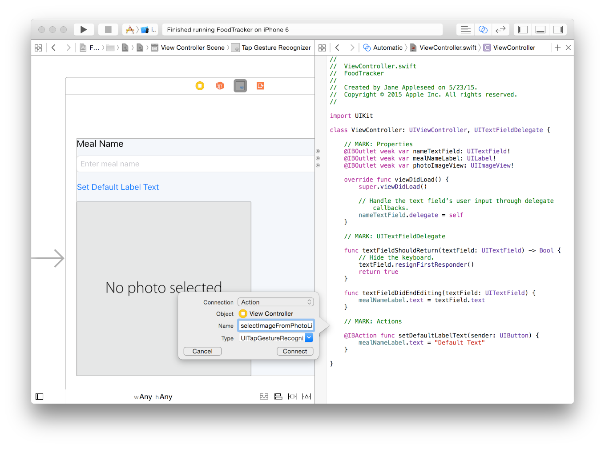
Click Connect.
Connectをクリックしてください。
Xcode adds the necessary code to ViewController.swift to set up the action.
Xcodeは、不可欠なコードをViewController.swiftに加えることでアクションを確立します。
Create an Image Picker to Respond to User Taps
イメージピッカーを作成してユーザタップに応答する
So what needs to happen when a user taps the image view? Presumably, users should be able to choose a photo from a collection of photos, or take one of their own. Fortunately, the UIImagePickerController class has all of this behavior built into it. An image picker controller manages a UI for taking pictures and for choosing saved images to use in your app. And just as you need a text field delegate when you work with a text field, you need an image picker controller delegate to work with an image picker controller. The name of that delegate protocol is UIImagePickerControllerDelegate, and the object that you’ll define as the image picker controller’s delegate is ViewController.
それでユーザがイメージビューをタップしたとき何が起こる必要があるでしょう？おそらく、ユーザができるべきは、写真を写真コレクションから選ぶこと、または彼ら独自のものの１つを取ることです。幸いにも、UIImagePickerControllerクラスは、この挙動の全てをそれに組み込みます。イメージピッカーコントローラは、あなたのアプリで使用するために画像の取得または保存された画像の選択をするためのUIを管理します。そしてまさにテキスト欄を扱うときにあなたがテキスト欄委任先を必要としたように、イメージピッカーコントローラを扱うのにあなたはイメージピッカーコントローラ委任先を必要とします。委任先プロトコルの名前はUIImagePickerControllerDelegateです、そしてあなたがイメージピッカーコントローラの委任先として定義するオブジェクトはViewControllerです。
First, ViewController needs to adopt the UIImagePickerControllerDelegate protocol. Because ViewController will be in charge of presenting the image picker controller, it also needs to adopt the UINavigationControllerDelegate protocol, which simply lets ViewController take on some basic navigation responsibilities.
まず、ViewControllerに必要なのはUIImagePickerControllerDelegateプロトコルに準拠することです。なぜならViewControllerは、イメージピッカーコントローラに起こっていることを管理することになるからです、それはまたUINavigationControllerDelegateプロトコルに準拠することもまた必要とします、それは単純にViewControllerがいくつかの基本的なナビゲーション責務を持つようにします。
To adopt the UIImagePickerControllerDelegate and UINavigationControllerDelegate protocols
UIImagePickerControllerDelegateとUINavigationControllerDelegateプロトコルに準拠するには
Return to the standard editor by clicking the Standard button.
標準エディタにStandardボタンをクリックすることで戻ってください。
Expand the project navigator and utility area by clicking the Navigator and Utilities buttons in the Xcode toolbar.
プロジェクトナビゲータとユーティリティ区画をNavigatorとUtilitiesボタンをXcodeツールバーでクリックすることで広げてください。
In the project navigator, select ViewController.swift.
プロジェクトナビゲータにおいて、ViewController.swiftを選択してください。
In ViewController.swift, find the class line, which should look like this:
ViewController.swiftにおいて、class行を見つけたください、それはこのように見えるはずです：
After UITextFieldDelegate, add a comma (,) and UIImagePickerControllerDelegate to adopt the protocol.
UITextFieldDelegateの後に、１つのコンマ（,）とUIImagePickerControllerDelegateを加えてください、それでこのプロトコルに準拠します。
After UIImagePickerControllerDelegate, add a comma (,) and UINavigationControllerDelegate to adopt the protocol.
UIImagePickerControllerDelegateの後に、１つのコンマ（,）とUINavigationControllerDelegateを加えてください、それでこのプロトコルに準拠します。
At this point, you can go back to the action method you defined, selectImageFromPhotoLibrary(_:), and finish its implementation.
この時点で、あなたはあなたの定義したアクションメソッド、selectImageFromPhotoLibrary(_:)に戻って、それの実装を完了することができます。
To implement the selectImageFromPhotoLibrary(_:) action method
selectImageFromPhotoLibrary(_:)アクションメソッドを実装するには
In ViewController.swift, find the selectImageFromPhotoLibrary(_:) action method you added earlier.
ViewController.swiftにおいて、あなたが定義したselectImageFromPhotoLibrary(_:)アクションメソッドを見つけてください。
In the method implementation, between the curly braces ({}), add this code:
このメソッド実装において、波括弧（{}）の間に、このコードを加えてください：
// Hide the keyboard.
nameTextField.resignFirstResponder()
This code ensures that if the user taps the image view while typing in the text field, the keyboard is dismissed properly.
このコードが請け負うのは、テキスト欄にタイプしている間にユーザがイメージビューをタップしたならば、キーボードがきちんと片付けられることです。
Add this code to create an image picker controller:
このコードを加えることでイメージピッカーコントローラを作成してください：
// UIImagePickerController is a view controller that lets a user pick media from their photo library. （UIImagePickerControllerはビューコントローラで、ユーザに彼らの写真ライブラリからメディアを選ばせます。）
// Only allow photos to be picked, not taken. （写真だけが選ばれるようにします、取得はされない）
imagePickerController.sourceType = .PhotoLibrary
This line of code sets the image picker controller’s source, or the place where it gets its images. The .PhotoLibrary option uses Simulator’s camera roll.
このコード行は、イメージピッカーコントローラのソースを、またはそれがそれの画像を得るところの場所を、設定します。.PhotoLibraryオプションはシミュレータのカメラロールを使います。
The type of imagePickerController.sourceType is known to be UIImagePickerControllerSourceType, which is an enumeration. This means you can write its value as the abbreviated form .PhotoLibrary instead of UIImagePickerControllerSourceType.PhotoLibrary. Recall that you can use the abbreviated form anytime the enumeration value’s type is already known.
imagePickerController.sourceTypeの型はimagePickerController.sourceTypeとして知られます、それは列挙です。この意味は、あなたがその値をUIImagePickerControllerSourceType.PhotoLibraryではなく省略形.PhotoLibraryを使って書けるということです。思い出してください、あなたはその列挙値の型がすでに知られているときはいつでも省略形を使うことができます。
Add this code to set the image picker controller’s delegate to ViewController:
このコードを加えることでイメージピッカーコントローラの委任先をViewControllerに設定してください。
// Make sure ViewController is notified when the user picks an image. （ユーザが画像を選んだときにViewControllerが通知をうけることを確実にします）
imagePickerController.delegate = self
Below the previous line, add this line of code:
前の行の下に、このコード行を加えてください：
presentViewController(_:animated:completion:) is a method being called on ViewController. Although it’s not written explicitly, this method is executed on an implicit self object. The method asks ViewController to present the view controller defined by imagePickerController. Passing true to the animated parameter animates the presentation of the image picker controller. The completion parameter refers to a completion handler, a piece of code that executes after this method completes. Because you don’t need to do anything else, you indicate that you don’t need to execute a completion handler by passing in nil.
presentViewController(_:animated:completion:)は、ViewController上で呼び出されているメソッドです。と言ってもそれは明示的には書かれません、このメソッドは暗黙的なselfオブジェクトで実行されます。このメソッドがViewControllerに尋ねることはimagePickerControllerによって定義されるビューコントローラが存在するかです。trueをanimatedパラメータに渡すと、イメージピッカーコントローラの実演を動画にします。completionパラメータは、完了ハンドラを参照します、それはこのメソッドが完了した後に実行されるコード片です。あなたは何もする必要はないので、あなたが完了ハンドラを実行する必要がないことをnilを渡すことによって示します。
Your selectImageFromPhotoLibrary(_:) action method should look like this:
あなたのselectImageFromPhotoLibrary(_:)アクションメソッドはこのようなものに見えるはずです：
// UIImagePickerController is a view controller that lets a user pick media from their photo library. （UIImagePickerControllerはビューコントローラで、ユーザに彼らの写真ライブラリからメディアを選ばせます。）
After an image picker controller is presented, its behavior is handed off to its delegate. To give users the ability to select a picture, you’ll need to implement two of the delegate methods defined in UIImagePickerControllerDelegate:
イメージピッカーコントローラが提供されてから後は、それの挙動はそれの委任先に渡されます。ユーザに図像を選ぶ能力を与えるために、あなたが実装する必要があるのはUIImagePickerControllerDelegateにおいて定義した委任先メソッド２つです：
The first of these, imagePickerControllerDidCancel(_:), gets called when a user taps the image picker’s Cancel button. This method gives you a chance to dismiss the UIImagePickerController (and optionally, do any necessary cleanup). Implement imagePickerControllerDidCancel(_:) to do that.
これらの最初のもの、imagePickerControllerDidCancel(_:)が呼ばれるのは、ユーザがイメージピッカーの「キャンセル」ボタンをタップした時です。このメソッドはあなたにUIImagePickerControllerを片付ける機会を与えます（そして随意に、何らかの不可欠な掃除を行います）。imagePickerControllerDidCancel(_:)を実装することでこれを行ってください。
To implement the imagePickerControllerDidCancel(_:) method
imagePickerControllerDidCancel(_:)メソッドを実装するには
In ViewController.swift, right above the // MARK: Actions section, add the following:
ViewController.swiftにおいて、// MARK: Actions部分のちょうど上に、以下を加えてください：
// MARK: UIImagePickerControllerDelegate
This is a comment to help you (and anybody else who reads your code) navigate through your code and identify that this section applies to the image picker implementation.
これはコメントであって、あなた（そしてあなたのコードを読む他の誰でも）があなたのコードをあちこち見ていく手助けをするもので、この部分がイメージピッカー実装に適用されるとわかるようにします。
Below the comment you just added, add the following method:
あなたがたった今加えたコメントの下に、以下のメソッドを加えてください：
The second UIImagePickerControllerDelegate method that you need to implement, imagePickerController(_:didFinishPickingMediaWithInfo:), gets called when a user selects a photo. This method gives you a chance to do something with the image or images that a user selected from the picker. In your case, you’ll take the selected image and display it in your UI.
あなたが実装する必要のある２番目のUIImagePickerControllerDelegateメソッド、imagePickerController(_:didFinishPickingMediaWithInfo:)が呼ばれるのは、ユーザがある写真を選択した時です。このメソッドはあなたにある機会を与えるので、それで何かをユーザがピッカーから選択した画像または複数の画像を使って行います。あなたの場合では、あなたは選択された画像をとってそれをあなたのUIに表示します。
To implement the imagePickerController(_:didFinishPickingMediaWithInfo:) method
imagePickerController(_:didFinishPickingMediaWithInfo:)メソッドを実装するには
Below the imagePickerControllerDidCancel(_:) method, add the following method:
imagePickerControllerDidCancel(_:)メソッドの下に、以下のメソッドを加えてください：
The info dictionary contains the original image that was selected in the picker, and the edited version of that image, if one exists. To keep things simple, you’ll use the original, unedited image for the meal photo, which is what this line of code stores into the selectedImage constant.
info辞書は、オリジナル画像、ピッカーにおいて選択されたもの、およびその画像の編集版、もしそれがあれば、を含みます。物事を単純に保つために、あなたはオリジナル、食事写真の無編集画像を使います、それがこのコード行が格納するのがselectedImage定数の中であるわけです。
Add this line of code to set the selected image in the image view outlet that you created earlier:
このコード行を加えて、選択された画像をあなたが以前に作成したイメージビューアウトレットの中に設定してください：
// Set photoImageView to display the selected image. （photoImageViewを選択された画像を表示するよう設定する。）
photoImageView.image = selectedImage
Add the following line of code to dismiss the image picker:
以下のコード行を加えて、イメージピッカーを片付けてください：
Your imagePickerController(_:didFinishPickingMediaWithInfo) method should look like this:
あなたのimagePickerController(_:didFinishPickingMediaWithInfo)メソッドはこのようなものに見えるはずです：
Checkpoint: Run your app. You should be able to click the image view to pull up an image picker. You’ll need to click OK on the alert that asks for permission to give the FoodTracker app access to Photos. Then, you can click the Cancel button to dismiss the picker, or open Camera Roll and click an image to select it and set it as the image in the image view.
確認点：あなたのアプリを実行します。あなたは、イメージビューをクリックしてイメージピッカーをプルアップできなければなりません。あなたは、FoodTrackerアプリをPhotosにアクセスさせるよう許可を求める警告上でOKをクリックする必要があるでしょう。そのとき、あなたはCancelボタンをクリックしてピッカーを片付けることができます、またはCamera Rollを開いてある画像をクリックしてそれを選択し、それをイメージビューの中の画像として設定することができます。
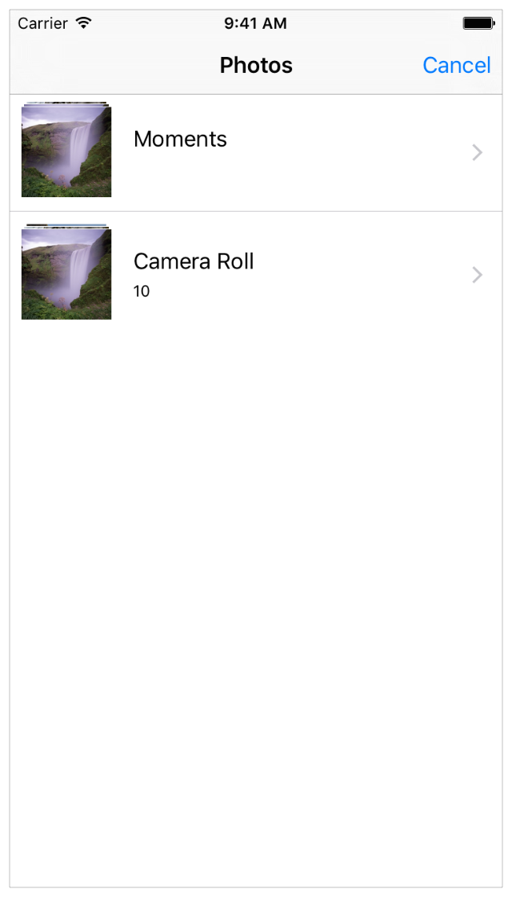
If you look through the photos available in Simulator, you’ll notice that it doesn’t include any photos of food. You can add your own images directly into Simulator to test the FoodTracker app with appropriate sample content. You can find a sample image within the Images/ folder of the downloadable file at the end of this lesson, or use your own image.
あなたがシミュレータの中で利用可能なPhotosをあちこち見たならば、あなたはそれがなんら食べ物の写真を含まないことに気づくでしょう。あなたは、あなた自身の画像を直接シミュレータに追加してFoodTrackerアプリを適切な見本コンテンツを使ってテストすることができます。あなたは、見本画像をこのレッスンの終わりでダウンロード可能なファイルのImages/フォルダ内で見つけることができます、またはあなた独自の画像を使うことができます。
To add images to Simulator
画像をシミュレータに追加するには
If necessary, run your app in Simulator.
必要ならば、あなたのアプリをシミュレータにおいて実行してください。
On your computer, select the images you want to add.
あなたのコンピュータ上で、あなたが追加したい画像を選択します。
Drag and drop the images into Simulator.
その画像をシミュレータへドラッグ＆ドロップしてください。
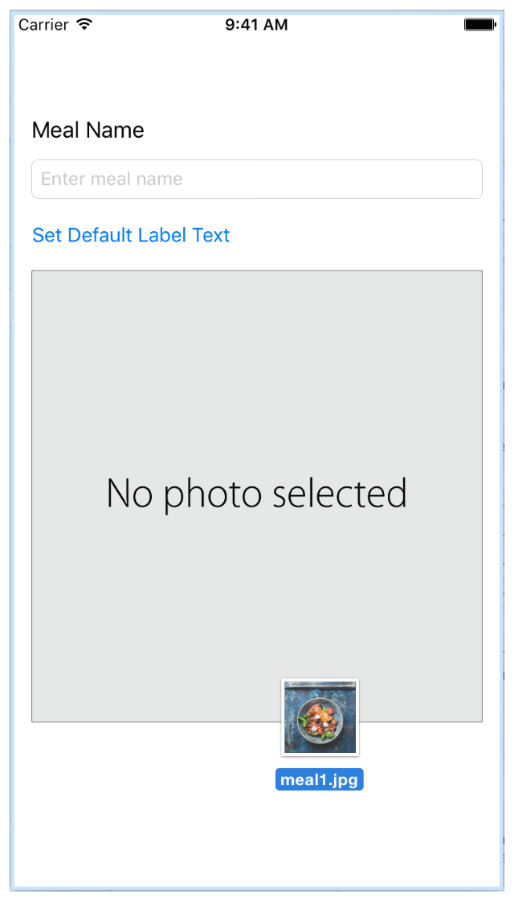
Simulator opens the Photos app and shows the images you added.
シミュレータはPhotosアプリを開いてあなたが追加した画像を表示します。
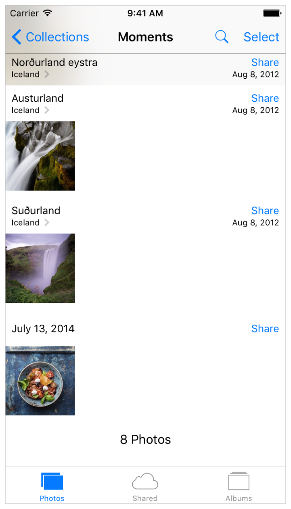
Checkpoint: Run your app. You should be able to tap the image view to pull up an image picker. Open Camera Roll, and click one of the images you added to Simulator to select it and set it as the image in the image view.
確認点：あなたのアプリを実行します。あなたは、イメージビューをタップしてイメージピッカーをプルアップできなければなりません。カメラロールを開いて、あなたがシミュレータに加えた画像の１つをクリックしてそれを選択し、それをイメージビューの中の画像として設定してください。、